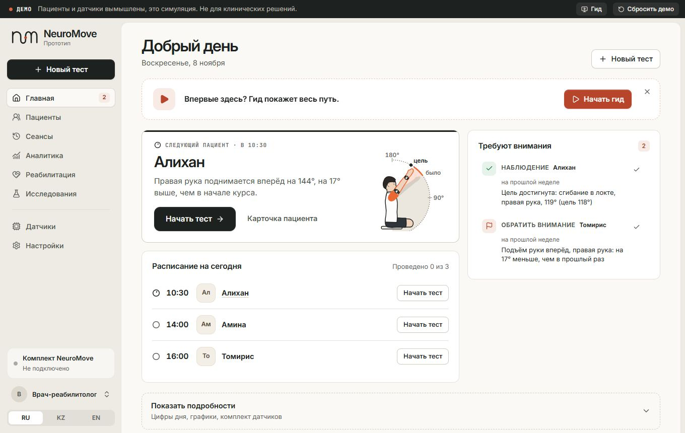
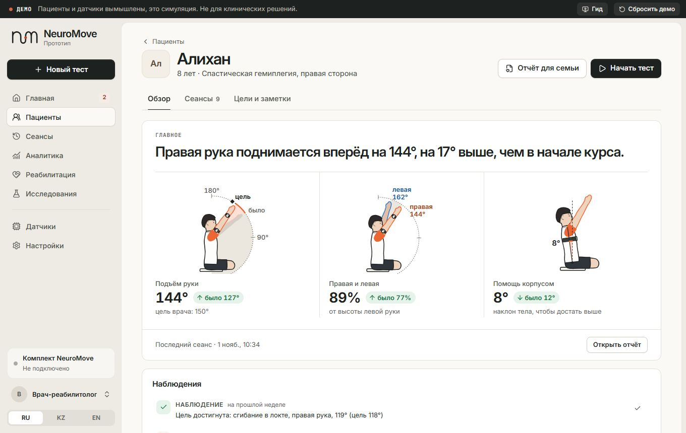
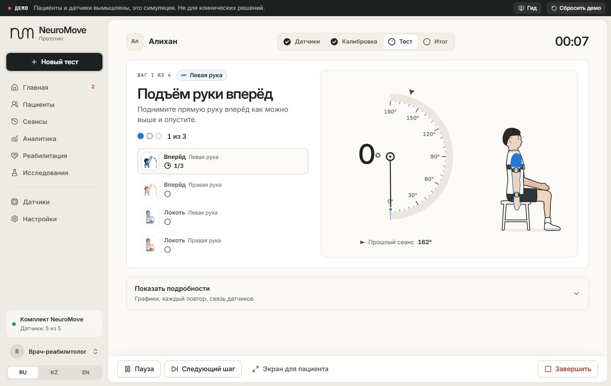
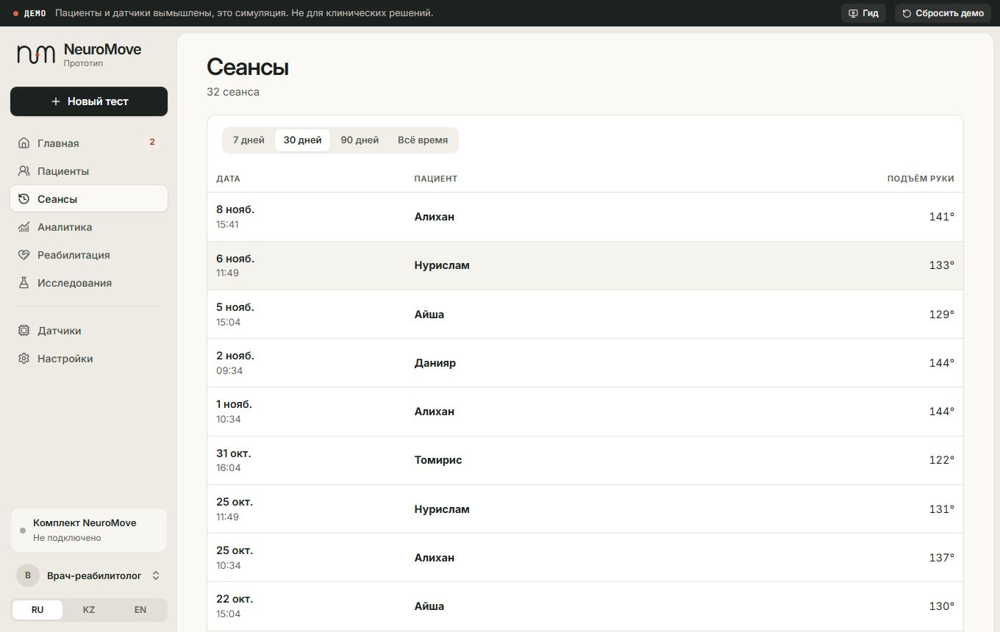
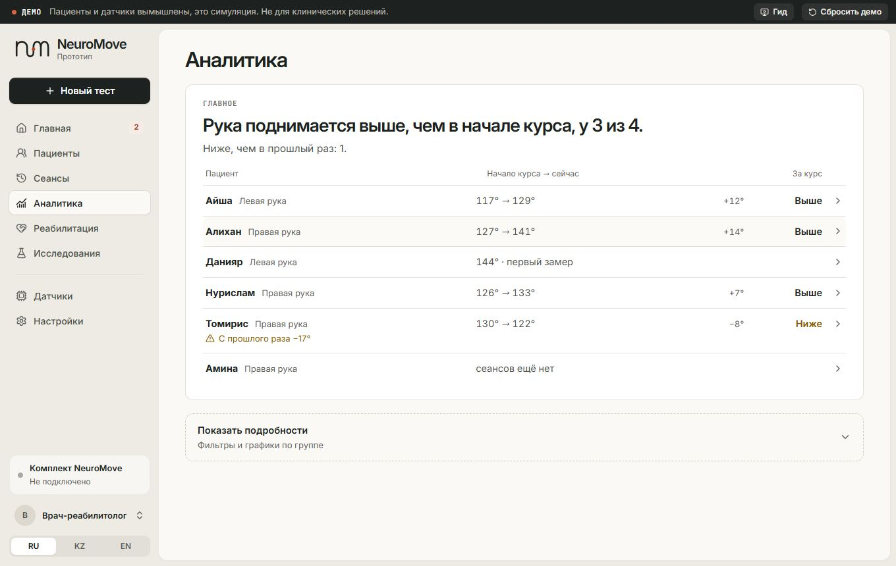
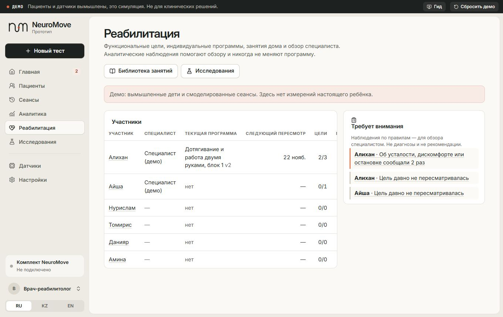
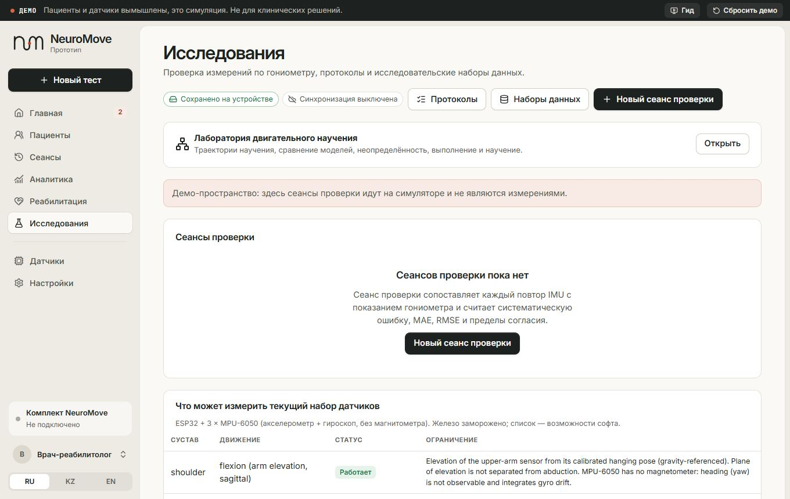
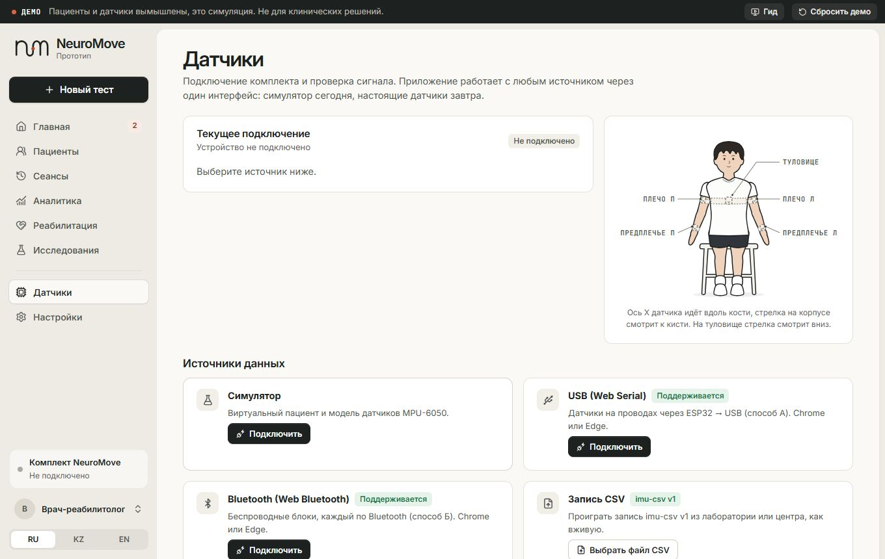

Содержание
Что есть в NeuroMove, где это на сайте и как это проверять
NeuroMove измеряет, как ребёнок с ДЦП двигает рукой, тремя датчиками на теле и показывает специалисту и семье, что изменилось. Вокруг теста выросли реабилитация (цели, программы, занятия дома), исследовательский модуль (проверка точности угломером) и лаборатория двигательного научения. Здесь всё это по разделам, со скриншотами, и как каждый раздел тестировать.
Демо и Клиника никогда не смешиваются. В демо всё смоделировано и подписано «ДЕМО» (тёмная полоса сверху). Симулятор датчиков в Клинике не работает: смоделированный сеанс туда не сохранится никаким путём. Все скриншоты на этой странице сняты в демо.
Как открыть сайт
- Боевой адрес — тот, что на Vercel. У каждого адреса (включая предпросмотры Vercel) своё хранилище в браузере: на новом адресе будет пусто, это не потеря данных.
- Локально:
cd website→npm install→npm run dev, затем адрес, который напишет Vite. - Для подключения настоящих датчиков нужен Chrome или Edge (Web Serial и Web Bluetooth).
Карта сайта
Меню слева в приложении ведёт в восемь разделов. Нажмите на карточку, чтобы перейти к описанию.

ГлавнаяСледующий пациент, расписание дня, что требует внимания.
ПациентыКарточка ребёнка: главное за курс, сеансы, цели и заметки.
Новый тестДатчики → калибровка → движения → итог.
СеансыВсе проведённые тесты, отчёт по каждому.
АналитикаУ кого рука поднимается выше, у кого ниже.
РеабилитацияЦели, программы, занятия дома, обзор специалиста.
ИсследованияПроверка угломером, протоколы, наборы данных, лаборатория.
Датчики и НастройкиПодключение комплекта, язык, пространство, синхронизация.Все адреса
Адреса с решёткой работают и на сервере, и при открытии файла с диска. Удобно для тестов: можно сразу открыть нужный экран.
| Экран | Адрес | Для чего |
|---|---|---|
| Стартовая | #/ | Лендинг: «Попробовать демо» или «Открыть пространство клиники» |
| Главная | #/overview | Рабочий стол специалиста на сегодня |
| Пациенты | #/patients, #/patients/<id> | Список и карточка; вкладки ?tab=sessions, ?tab=goals |
| Новый тест | #/session/new?patient=<id>&protocol=upper_quick | Выбор пациента и протокола |
| Идёт тест | #/session/run | Датчики, калибровка, тест |
| Сеансы и отчёт | #/sessions, #/sessions/<id> | История и отчёт; /print — для печати |
| Аналитика | #/analytics | Сводка по всем пациентам |
| Реабилитация | #/rehab, #/rehab/p/<id>?tab=… | Панель и страница участника (8 вкладок) |
| Библиотека / исследования | #/rehab/activities, #/rehab/studies | Занятия и пилотные исследования |
| Страница семьи | #/home/<id> | Занятия дома и отчёт «как прошло» |
| Режим ребёнка | #/play/<id> | Крупные карточки занятий для ребёнка |
| Исследования | #/research | Сеансы проверки угломером, вход в лабораторию |
| Протоколы / новый сеанс проверки | #/research/protocols, #/research/new | Версии протоколов, запуск проверки |
| Наборы данных | #/research/datasets | Выгрузка CSV/JSON для анализа |
| Лаборатория | #/research/lab | Вход во все инструменты лаборатории |
| Обозреватель / двойник | #/research/learning, #/research/twin/<id> | Модели изменения результата |
| Анализ движения | #/research/movement | Сырые сигналы 100 Гц одного сеанса |
| Координация | #/research/coordination | Стратегии движения по всем датчикам |
| Конструктор / отчёты / готовность | #/research/designer, /runs, /readiness | Протоколы научения, замороженные анализы |
| Датчики / Настройки | #/devices, #/settings | Подключение, язык, пространство, синхронизация |
В демо id детей: demo-p01 (Алихан) … demo-p06 (Амина).
Тест: от датчиков до итога
Главный путь продукта. Специалист проводит тест руки примерно за минуту (быстрая проверка) или две (стандартная оценка). Все углы считает приложение из сырых чисел датчиков; устройство только передаёт данные.
1. Главная
2. Новый тест: пациент и протокол
| Протокол | Что внутри | Когда |
|---|---|---|
| Стандартная оценка | Подъём вперёд, в сторону, локоть, поворот предплечья; обе руки; по 3 повтора | Полный тест на визите |
| Быстрая проверка | Подъём вперёд и локоть; обе руки; по 3 повтора | Короткий визит, демо |
| Выносливость: локоть | Сгибание локтя поражённой рукой 60 с | Много повторов подряд |
| Свой набор | Выбор движений и сторон; 3 или 5 повторов | Под задачу специалиста |
| Проверка одним датчиком | Один датчик на плече или предплечье | Проверка железа и угла против угломера, не оценка пациента |
3. Датчики выходят на связь
4. Калибровка и тест
- Повтор засчитывается, когда угол ушёл выше порога и вернулся вниз.
- Если связь пропала, тест встаёт на паузу, прерванный повтор не засчитывается («Связь с устройством потеряна» → «Связь восстановлена» → «Продолжить»).
- Если вкладку случайно закрыли, незаконченный тест восстанавливается при следующем открытии.
- Сырые кадры 100 Гц сохраняются вместе с сеансом (нужны лаборатории). С 8 ноября к ним пишется «манифест» с хэшем, чтобы проверить, что данные не менялись.
5. Итог
Пациенты, сеансы, аналитика
Угол руки считается от вертикали, а не от туловища. Если ребёнок откинулся назад, рука в мире поднимается выше. Поэтому наклон туловища показан отдельной строкой: так видно, сколько градусов «добрано» корпусом.
Демо-пациенты: на ком что смотреть
| Ребёнок | История | Что проверять на нём |
|---|---|---|
| Алихан | 8 лет, гемиплегия справа, 9 сеансов, рост 127° → 144° | Главный путь, гид, отчёт для семьи, реабилитация |
| Айша | Плато | Наблюдение «плато»: 4 сеанса в пределах 6° |
| Нурислам | Обе стороны, потери связи | Полнота записи, качество данных |
| Томирис | Откат после перерыва | Наблюдение «откат к прошлому сеансу» |
| Данияр | Только исходный тест | Что видно после первого визита |
| Амина | Новый пациент | Пустые состояния |
Числа демо воспроизводимы: «Сбросить демо» возвращает те же значения (даты сдвигаются на сегодня).
Датчики и настройки
Облачная синхронизация
- Выключена по умолчанию: пока сотрудник не вошёл и не включил её, ничего не уходит из браузера.
- Любая запись сначала сохраняется на устройстве вместе с операцией в очереди. «Синхронизировано» появляется только после ответа сервера.
- Демо и смоделированные данные не синхронизируются: сервер их тоже отклоняет.
- Конфликты (две правки одной записи) — выбор «версия сервера» или «оставить мою».
- Первая настройка команды требует одноразовый код
NEUROMOVE_SETUP_CODEна сервере.
Демо и гид для показа
Гид проводит по пути «пациент → тест → итог» за 3 минуты: на каждом шаге светлым остаётся только то, о чём он говорит, а нужная кнопка обведена киноварью. Это для показов жюри, врачам, родителям.
- Гид переживает перезагрузку: продолжит с того же шага.
- Если ушли на другой экран, гид скажет «Вы ушли с шага…» и предложит вернуться.
- На шаге теста есть «Показать обрыв связи» — демонстрация паузы при потере датчика.
- «Сбросить демо» (справа в полосе) возвращает демо-данные к исходным.
Реабилитация: цели, программы, обзор
Система функционального прогресса. Цикл: цели ребёнка и семьи → оценка специалиста → индивидуальная программа → занятия в клинике и дома → измерения → анализ → обзор специалиста → новая версия программы. Приложение ничего не назначает и не меняет само: все числа в программе вводит специалист, аналитика только подсказывает, что посмотреть.
Страница участника: 8 вкладок
| Вкладка | Что там |
|---|---|
| Профиль | Ответственный специалист, области, классификации (как ввёл врач), участие семьи, как показывать режим ребёнка |
| Цели | Цель словами, зачем, исходный уровень, цель, как измерять, срок пересмотра; история только дописывается; уровни GAS; коды МКФ-ДП |
| Программа | Модули A–E, занятия с частотой и минутами от специалиста; каждая правка — новая неизменяемая версия с причиной |
| Хронология | Всё по времени: клиника и дом, у каждой записи источник |
| Движение | Метрики IMU с проверкой качества, исходный уровень, тренд. Помечено «клинически не валидировано» |
| Оценки | GAS (T-балл), COPM, GMFM как ввели; исправления не перезаписывают, а заменяют |
| Семья | Отчёты семьи, сообщения, события безопасности (боль), сводки для семьи |
| Обзор | Сводка фактов с источниками (без ИИ), наблюдения, ответ специалиста, решение и обоснование |
Нет общего балла, нет слова «улучшилось» (только «выше/ниже исходного»), нет автоматического повышения нагрузки, нет рейтингов и наказаний для ребёнка. «Не сделали» — нейтральный ответ.
Семья и режим ребёнка
- Ответ «Было больно» сразу показывает «Пожалуйста, остановите занятие» и открывает событие безопасности для специалиста.
- Запись попыток практики (для лаборатории) включает специалист на странице двойника участника; в клинике нужно активное согласие. Тогда сохраняются и сырые кадры занятия.
Проверка угломером
Этот модуль доказывает (или опровергает), что угол датчиков совпадает с угломером (гониометром). Каждый повтор: датчик фиксирует угол, сеанс встаёт на паузу, человек меряет угломером и вводит число. Модуль считает систематическую ошибку, MAE, RMSE, пределы согласия Бланда–Альтмана и ICC. Точность прибора он не утверждает: он её измеряет.
Что нужно
- Двое: оператор у компьютера и измеряющий угломером. Один и тот же угломер на весь сеанс, его модель — в заметках.
- Chrome или Edge, комплект по USB или Bluetooth. Пространство «Клиника» для настоящих людей; в демо работает только симулятор, и его значения помечены как не измерения.
- Участник под кодом (не имя). Для первых проверок — стенд с фиксированными углами (шаблон «Elbow — fixed angles (bench check)»).
Пошагово
- Протокол. Исследования → Протоколы → шаблон (например, «Elbow flexion — goniometer agreement») → проверить поля → «Создать протокол». Каждое сохранение — новая неизменяемая версия; сеанс помнит, по какой версии шёл.
- Новый сеанс проверки. Участник, протокол, подключение (USB / Bluetooth; симулятор только в демо), условия измерения (модель угломера, положение, помещение). «Создать сеанс и подключить датчики».
- Датчики и калибровка. Дождаться связи, «Начать тест», 3 секунды неподвижно, руки вдоль тела.
- Удержание и запись. Участник держит положение (~3 с). Когда под углом написано «Стабильно» (разброс окна в пределах порога), оператор жмёт «Записать значение IMU» или пробел. Записывается медиана угла за окно (1 с по умолчанию) и её разброс.
- Угломер. Сеанс на паузе, поле «Показание гониометра» уже в фокусе. Измерить, ввести (запятая или точка), Enter. Следующую запись нельзя сделать, пока значение не сохранено.
- Если что-то не так. «Повторить измерение», «Отметить недействительным» (нужна причина), «Пропустить с причиной». Прошлый повтор можно пересмотреть и исправить: замена хранится в журнале.
- Отчёт. Обновляется после каждой пары. «Завершить сеанс» → отчёт, печать/PDF, CSV и JSON. Все сеансы вместе — в «Наборах данных».
- Сначала стенд с фиксированными углами, потом взрослые добровольцы, потом дети (у детей с ДЦП сам угломер расходится на 10–14° между замерами).
- Не округлять показания угломера при вводе; приложение хранит их как есть.
- Каждое значение угломера привязано к одному зафиксированному измерению IMU, а не к «текущему углу».
- Метка «Недостаточно» у статистики значит, что пар слишком мало для вывода. Это не ошибка.
- Сеансы проверки пока не пишут сырые кадры: пересчитать их новым алгоритмом нельзя.
Лаборатория двигательного научения
Исследовательский слой: как результат конкретного движения меняется у одного человека с практикой, с моделями, неопределённостью и честным «данных недостаточно». Всё помечено: измерено / рассчитано / оценка модели / прогноз / гипотеза. Не клинический инструмент.
| Инструмент | Для чего |
|---|---|
| Обозреватель научения | Ряд одного показателя (объём, скорость, плавность…) по сеансам; сравнение моделей (без изменений, линейная, экспонента и др.), «Без изменений» всегда среди кандидатов; прогноз с полосой |
| Вычислительный двойник | Индивидуальная модель изменения результата и её границы (что двойник не может наблюдать); переключатель записи практики; модели по попыткам практики |
| Анализ движения | Один сеанс с сырыми кадрами или файл imu-csv: качество сигнала по датчикам, угловая скорость, наклон, движения по скорости и их признаки |
| Конструктор исследований | Версионируемые протоколы научения с заранее заданным планом анализа |
| Отчёты | Замороженные анализы с хэшами; проверка «воспроизводится / отличается» |
| Готовность к модели | Чего не хватает данным для обучения модели движений (такой модели пока нет) |
| Координация и стратегии | Новое: отдельный раздел ниже |
Координация и стратегии
Новый движок (MCSE). Одинаковый результат можно получить разными способами: поднять руку на 120° только плечом, или плечом на 102° и откинуть туловище назад на 18°. Клинический тест покажет 120° в обоих случаях. Движок смотрит на все датчики сразу и отвечает: как движение распределено между туловищем, плечом, предплечьем и локтем; есть ли у ребёнка разные «стратегии» при одинаковом результате; как они меняются от сеанса к сеансу.
Не измеряет мышцы и мозг (это кинематика, не «синергии»), не ставит диагноз. Стратегии называются нейтрально — A, B; никогда «компенсаторная» или «правильная». Если данных мало, честно пишет «недостаточно данных».
Что ждать от синтетической демонстрации
| Где | Ожидается (одинаково при каждом запуске) |
|---|---|
| Плашка | «СИНТЕТИЧЕСКАЯ демонстрация — не участник» |
| Записи | 4 сеанса, по 12 / 12 повторов, калибровка сеанса |
| Стратегии | «несколько стратегий», K = 2; A — 28 повторов (туловище ≈ −18°), B — 20 (туловище ≈ 0°); результат у обеих ≈ 120° |
| Последовательность | Сеанс 1 — все A; дальше A/B: 9/3, 5/7, 2/10 |
| Диссоциация A против B | «диссоциация», результаты эквивалентны, почти всё различие в наклоне туловища |
| Пара 0#6 и 1#7 | Разница результатов ≈ 1°, «превышает типичную вариабельность» |
- Проверен только на синтетике (16 из 19 заранее заданных критериев); на реальных детях ещё не запускался.
- Для стратегий нужно 12+ повторов одного движения одной руки (лучше 24+). Обычный тест даёт 3 — «недостаточно данных» тут нормально.
- Локоть при отведении руки не измеряется надёжно — исключён из анализа отведения.
Подробный гид по экрану, кодам причин и коду: website/docs/MCSE_GUIDE.md.
Как тестировать
Чек-листы ниже можно отмечать: отметки хранятся только в вашем браузере. Для каждой проверки указано, что должно быть.
Что считать багом сразу
- Смоделированные данные без пометки, или они попали в пространство Клиники.
- Пропал сохранённый сеанс (раньше такое было из-за проверки при загрузке — теперь такие записи уходят в «карантин», а не удаляются).
- Число показано там, где датчика нет или данных недостаточно.
- Слова «улучшилось», «компенсаторная стратегия», «диагноз» в интерфейсе.
- Страница падает или зависает; ошибки в консоли.
Как сообщать: адрес экрана (из строки браузера), пространство (Демо / Клиника), язык, браузер, шаги, скриншот, текст ошибок из консоли.
Что сделано и что осталось
Состояние на 8 ноября 2026 по отчётам проекта.
готово реализовано, автотесты проходят · не на железе работает в софте и на симуляторе, с реальным комплектом не проверено · эксперимент работает с оговорками · не сделано
| Часть | Статус | Комментарий |
|---|---|---|
| Тест, отчёт, карточка, аналитика, демо и гид | готово | Симулятор, USB, Bluetooth, повтор CSV через один интерфейс |
| Хранение и восстановление | готово | Исправлена пропажа сеансов (карантин вместо удаления), подтверждённая запись |
| Сервер и синхронизация | готово | Проверено на встроенном PostgreSQL (PGlite); с живой базой и Upstash ещё не запускалось |
| Проверка угломером | не на железе | Весь процесс и статистика протестированы; сама точность устройства ещё не измерена |
| Захват по пику повтора | эксперимент | Рекомендуемый режим — удержание |
| Поворот предплечья, наклон туловища | эксперимент | Подъём плеча и сгибание локтя — рабочие |
| Реабилитация, семья, режим ребёнка | готово | Правила наблюдений и содержание занятий должны подтвердить специалисты |
| Датчики в режиме ребёнка | не на железе | Только показ, не сохраняется |
| ИИ-черновик сводки | эксперимент | Выключен по умолчанию; проверен на поддельном клиенте, не на живом API |
| Лаборатория научения | готово | Валидация моделей на синтетике; реальных продольных данных пока нет |
| Координация и стратегии | готово | 16 из 19 критериев на синтетике; реальные дети — следующий шаг |
| Сырые кадры в сеансах проверки угломером | не сделано | Пересчитать проверку новым алгоритмом нельзя |
| Экраны тест–ретест и межэкспертной надёжности | не сделано | Расчёт есть, интерфейса дизайна исследования нет |
| Управление командой в интерфейсе | не сделано | Сотрудников пока добавляют через API |
| Казахский язык | эксперимент | Семья, ребёнок, демо, лаборатория переведены; нужна проверка носителем; часть профессиональных экранов — на русском |
Главные следующие шаги
- Проверка угломером на стенде и на взрослых с настоящим комплектом.
- Живая база PostgreSQL на Vercel, миграции, первая команда.
- Исследование повторного надевания датчиков (сколько градусов даёт само переодевание).
- Решить, заменить ли имена детей на псевдонимные коды до включения синхронизации.
Для разработчиков
Команда (из website/) | Что делает |
|---|---|
npm run dev | Сервер разработки |
npx tsc -b | Проверка типов (приложение, node, сервер) |
npx eslint . | Линтер |
npm test | Все модульные и интеграционные тесты (≈ 475) |
npm run e2e | Сквозные тесты в установленном Chrome на собранном сайте |
npm run build | Сборка; npm run build:demo — демо одним файлом |
npm run build:api | Пересобрать api/index.js после правок сервера или общего кода (тест упадёт, если забыть) |
npm run db:migrate | Миграции PostgreSQL (с DATABASE_URL) |
| Где код | Что там |
|---|---|
src/core | Перевод сырых чисел, ориентация, углы, повторы, метрики |
src/session, src/state | Движок теста, контроллер сеанса, хранилище приложения |
src/devices, src/simulation | USB, Bluetooth, повтор, симулятор и модель датчиков |
src/data, src/sync, server/ | IndexedDB, очередь синхронизации, сервер |
src/research | Проверка угломером: модель, процесс, статистика, выгрузки |
src/rehab | Реабилитация: модель, правила, политики (общие с сервером) |
src/lab, src/lab/coord | Лаборатория научения и движок координации |
src/features/* | Экраны по разделам |
docs/, ../research/ | Отчёты, оси и знаки (docs/ENGINEERING_10H/COORDINATES.md), научные документы |
Правила, которые держат тесты
- Любое изменение, которое меняет числа при тех же данных, — новая версия алгоритма (
core/version.ts,lab/version.ts). - Новый вариант перечисления (протокол и т. п.) — из одной константы; параллельных списков не держать.
- Строки интерфейса — на трёх языках; для лаборатории русский и казахский обязательны (иначе ошибка сборки).
- Классы CSS реабилитации с префиксом
rh-, координации —co. - Железо и прошивка заморожены: только чтение.